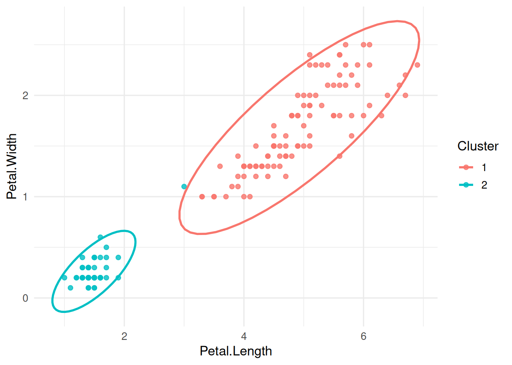
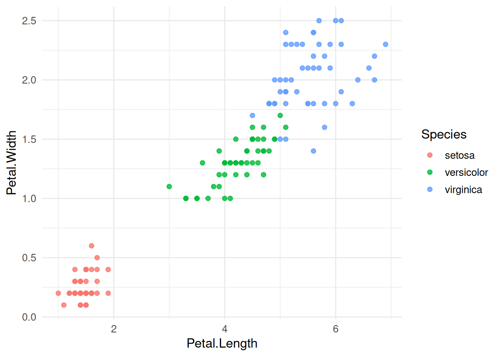
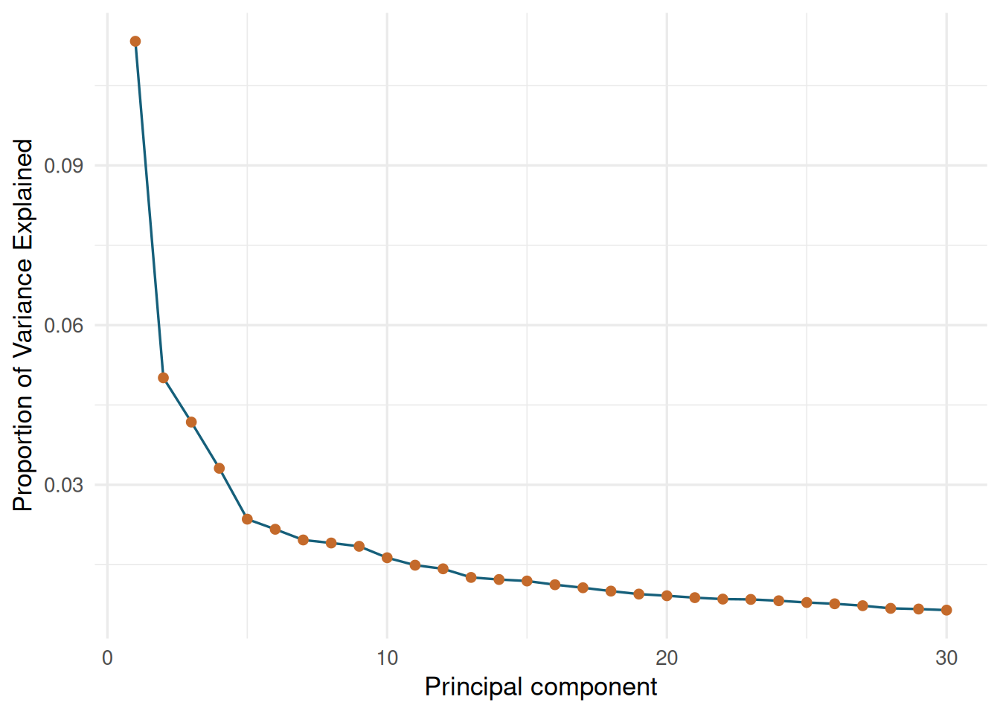
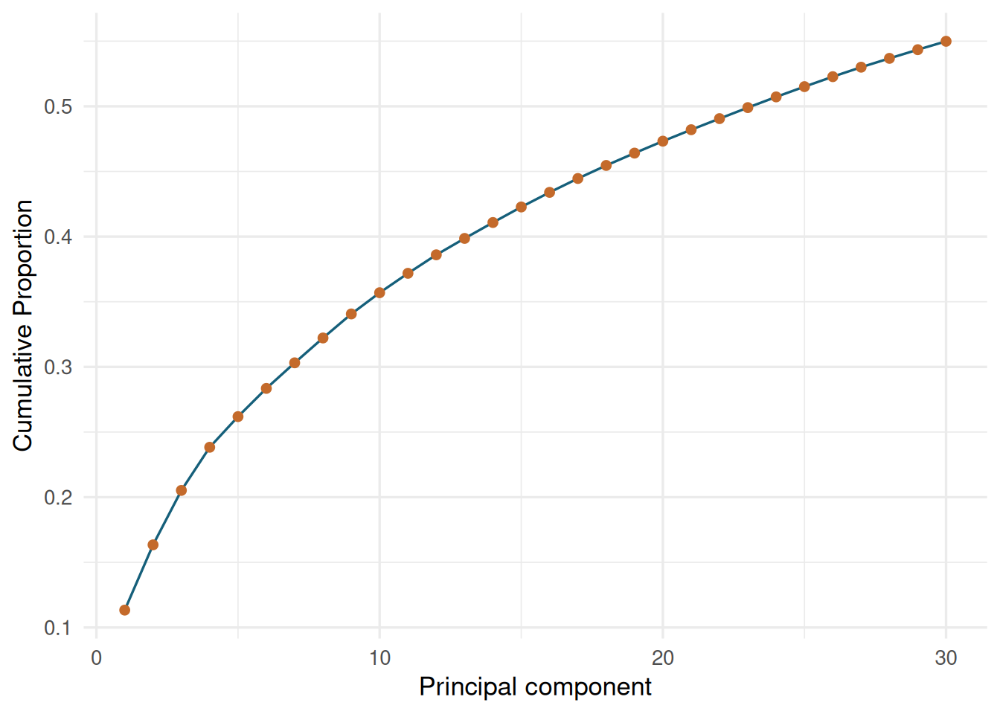
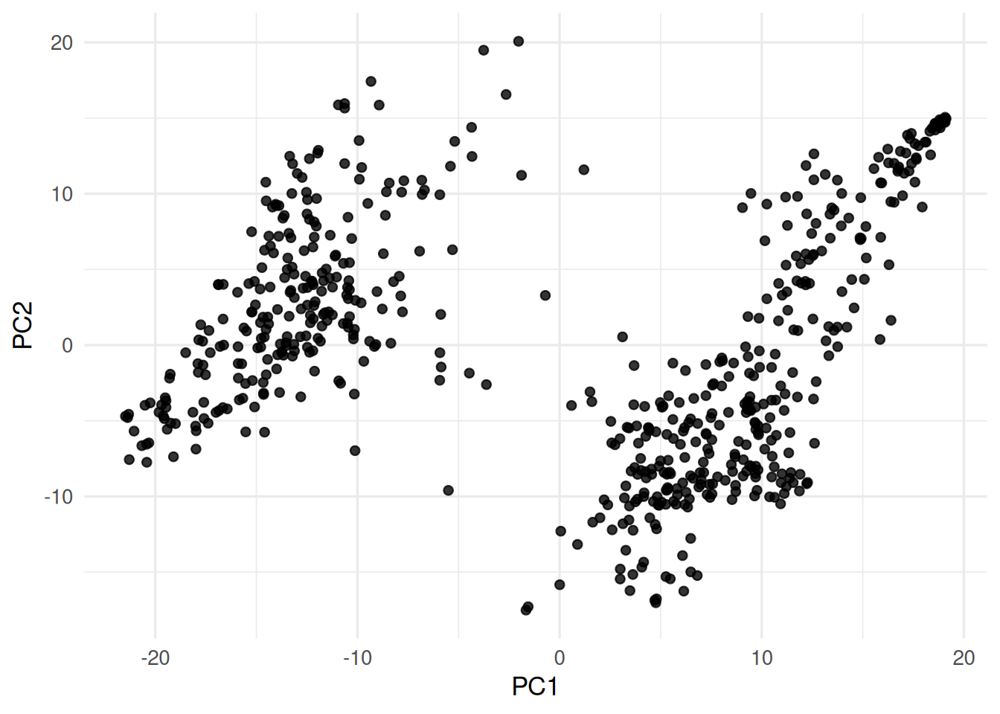
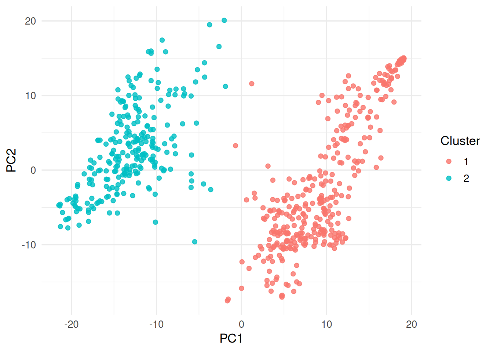

library(pacman)
p_load(ggplot2, knitr, plotly, lubridate, tidyverse, rstan, GGally, BGLR)
# load dataset
data(iris)
ggpairs(
iris,
columns = 1:4,
aes(color = Species)
)
# extract most promising features
iris_out = iris %>% select(x = Petal.Length, y = Petal.Width, Species)Multivariate Clustering
1 Multivariate Clustering
Multivariate Clustering is the extension of univariate clustering (using only one feature for identifying grouping categories), that makes use of more than one feature.
In the case of two features, we can apply the same logic of using mixture models to cluster individuals into groups, only that now we fit a mixture of k multivariate normal distributions.
\[ p(\mathbf{x}) = \sum_{i=1}^{K} \lambda_i f_i(\mathbf{x}), ~~~~~~ with \sum \boldsymbol{\lambda} = 1. \]
Multivariate normal distribution: \(f(\mathbf{x}) \sim MVN(\boldsymbol{\mu}, \Sigma)\) with \(\boldsymbol{\mu}\) is a vector of location parameters of length 2 and \(\Sigma\) is a variance-covariance matrix of dimension 2.
In the bivariate case, the contours of the quntiles of the multivariate normal distributions are ellipses. Hence, the gates are defined by ellipses in which a certain fraction of the probability mass of the distribution falls. In order to gate by such an ellipse, we need to exclude (or include) data points that fall into that ellipse. The ellipse itself can be defined by the quantile which we want to establish, e.g. we want the area in which 95% of the probability mass falls. The equation for an ellipse is the generalization of a circle:
\[ \begin{align} Circle: & \frac{(x - \mu_x)^2}{r^2} + \frac{(y - \mu_y)^2}{r^2} = 1 \\ Ellipses: & \frac{(x - \mu_x)^2}{r_x^2} + \frac{(y - \mu_y)^2}{r_y^2} = 1 \\ \end{align} \]
The ellipse has two radii, one for the x and one for the y axis. By knowing the values for \(r^2_x\) and \(r^2_y\) we can therefore check for the equality given above and see whether the data point falls into the ellipse.
For the multivariate normal distribution, the squared distance of a data point to the mean in standard deviation units (\(c^2)\) can be calculated as: \[ (\mathbf{x} - \boldsymbol{\mu})'\Sigma^{-1}(\mathbf{x} - \boldsymbol{\mu}) = c^2. \]
In order to assess, whether a data point falls into the quantile \(\alpha\), the result of equation \(\ref{eq:mvnellipses}\) must be equal or lower to the \(\alpha\) quantile of a \(\chi^2\) distribution with 2 degrees of freedom.
1.1 Explore pairwise bivariate data
Lets first visualize the features we have got available to the iris data set:

Next step is to try and recover the Species labels with clustering the two extracted features.
1.2 Fitting mixture of k multivariate normal
p_load(mixtools)
# make function for fitting and plotting multivariate mixtures
RunMixtureMVN = function(x, y, k = 2, labels = NULL, palette = "Dark 3") {
mod = mvnormalmixEM(x = cbind(x,y), k = k)
thetas <- mod$pro
mus <- mod$mu
V <- mod$sigma
if(is.null(labels)) labels = "1"
dplot = data.frame(
x = x,
y = y,
prob = mod$posterior[,1],
labels = labels
)
colors = hcl.colors(n = k, palette = palette)
# make a plot
p <- ggplot(dplot, aes(x = x, y = y)) +
geom_point(alpha = 0.8, aes(color = prob))
# make label plot
p_label <- ggplot(dplot, aes(x = x, y = y)) +
geom_point(alpha = 0.8, aes(color = labels))
# add cluster ellipses
for(i in 1:k) {
ellipses <- ellipse(mu = mus[[i]], sigma = V[[i]], alpha = 1-0.999, npoints = 250, newplot = FALSE, draw = FALSE) %>%
as.data.frame %>%
rename(a = V1, b = V2)
p = p + geom_point(data = ellipses, aes(x = a, y = b), color = colors[i], size = 0.8, shape = 8)
p_label = p_label + geom_point(data = ellipses, aes(x = a, y = b), color = colors[i], size = 0.8, shape = 8)
}
p = p + scale_color_continuous(low = "black", high = "red4", guide = guide_legend(title = "Probability Cluster"), limits = c(0,1))
return(
list(
dplot = dplot,
p = p,
p_label = p_label,
mod = mod,
thetas = thetas,
mus = mus,
V = V
)
)
}
# run on iris data
mm_two = RunMixtureMVN(x = iris_out$x, y = iris_out$y, k = 2, labels = iris_out$Species)
mm_three = RunMixtureMVN(x = iris_out$x, y = iris_out$y, k = 3, labels = iris_out$Species)
# get the plot
mm_two$p
mm_two$p_label
mm_three$p
mm_three$p_labelThe rendered preview below uses the same two iris features and shows the grouping geometry without requiring mixtools during the website build.
iris_out = data.frame(
x = iris$Petal.Length,
y = iris$Petal.Width,
Species = iris$Species
)
set.seed(2026)
km_iris = kmeans(iris_out[, c("x", "y")], centers = 2)
iris_out$cluster = factor(km_iris$cluster)
ggplot(iris_out, aes(x = x, y = y, color = cluster)) +
geom_point(alpha = 0.8) +
stat_ellipse(type = "norm", linewidth = 1) +
labs(x = "Petal.Length", y = "Petal.Width", color = "Cluster")
ggplot(iris_out, aes(x = x, y = y, color = Species)) +
geom_point(alpha = 0.8) +
labs(x = "Petal.Length", y = "Petal.Width", color = "Species")
1.3 Principal Component Clustering
Principal Component Analysis (PCA) is a feature compression method, that finds transformations of linearly independent features from the total set that are ordered by their importance (variance explained). We can obtain those features using a singular value decomposition:
\[ \mathbf{X} = \mathbf{USV'} \]
where the principal components can be extracted from \(\mathbf{US}\) (\(\mathbf{S}\) is a diagonal matrix with the singular values as diagonal elements). The maximum number of principal components from a given feature matrix is equal to its rank. Usually we extract the first 1-10 components for regression or clustering porpuses.
1.3.1 PCAs for clustering
We will be computing the PCAs for a genotype data set, extract the first 2 components and use them to cluster our data using a multivariate mixture model:
data(wheat)
M = wheat.X
# get principal components
pca = prcomp(M, scale = TRUE, center = TRUE)
spca = summary(pca)
# plot proportion of variance
plot(spca$importance[2,], ylab = "Proportion of Variance Explained")
# plot cumulative importance
plot(spca$importance[3,], ylab = "Cumulative Proportion")
# plot raw components
ggplot(data.frame(x = pca$x[,1], y = pca$x[,2]), aes(x = x, y = y)) + geom_point() + xlab("PC1") + ylab("PC2")
# cluster using our function
mm_pca = RunMixtureMVN(x = pca$x[,1], y = pca$x[,2], k = 2, palette = "Dark 3")
mm_pca$plibrary(BGLR)
data(wheat)
M = wheat.X
pca = prcomp(M, scale = TRUE, center = TRUE)
spca = summary(pca)
pca_importance = data.frame(
PC = seq_along(spca$importance[2,]),
proportion = as.numeric(spca$importance[2,]),
cumulative = as.numeric(spca$importance[3,])
)
ggplot(pca_importance[1:30, ], aes(x = PC, y = proportion)) +
geom_line(color = "#155f7a") +
geom_point(color = "#c46a2b", size = 1.8) +
labs(x = "Principal component", y = "Proportion of Variance Explained")
ggplot(pca_importance[1:30, ], aes(x = PC, y = cumulative)) +
geom_line(color = "#155f7a") +
geom_point(color = "#c46a2b", size = 1.8) +
labs(x = "Principal component", y = "Cumulative Proportion")
pca_scores = data.frame(
PC1 = pca$x[,1],
PC2 = pca$x[,2]
)
ggplot(pca_scores, aes(x = PC1, y = PC2)) +
geom_point(alpha = 0.8) +
labs(x = "PC1", y = "PC2")
1.4 K-Means
K-Means is a clustering technique that minimzes the following function:
\[ f(x) = \sum_{i = 1}^{k}\sum_{j = 1}^{nk} (x_j - \mu_i)^2 \]
where elements of \(x\) are subsetted into \(k\) clusters and we minimize the squared distance between all elements of \(x\) within a given cluster and that cluster mean (\(\mu_i\)).
p_load(factoextra)
dat = iris %>% select(-Species)
dat = as.data.frame(M)
kmeans <- kmeans(M, centers = 2)
# 3. Visualize
kplot = fviz_cluster(
kmeans,
data = dat,
ggtheme = theme_minimal()
)
kplotset.seed(2026)
kmeans_pca = kmeans(pca$x[,1:2], centers = 2)
pca_scores$cluster = factor(kmeans_pca$cluster)
ggplot(pca_scores, aes(x = PC1, y = PC2, color = cluster)) +
geom_point(alpha = 0.8) +
labs(x = "PC1", y = "PC2", color = "Cluster")